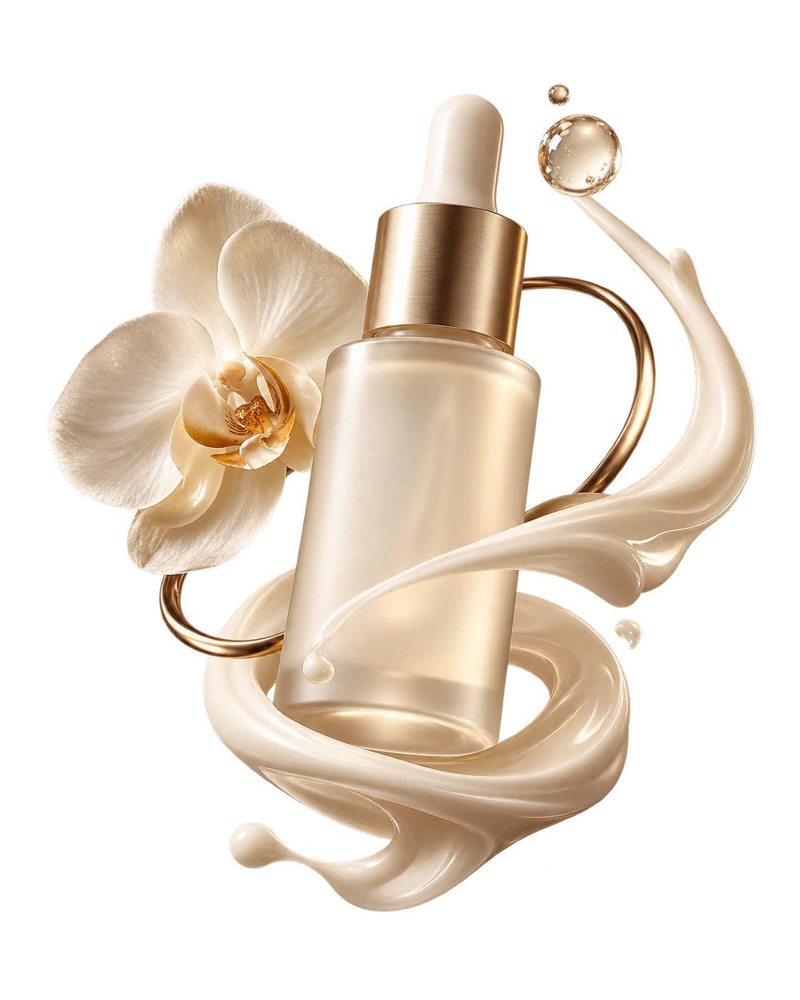
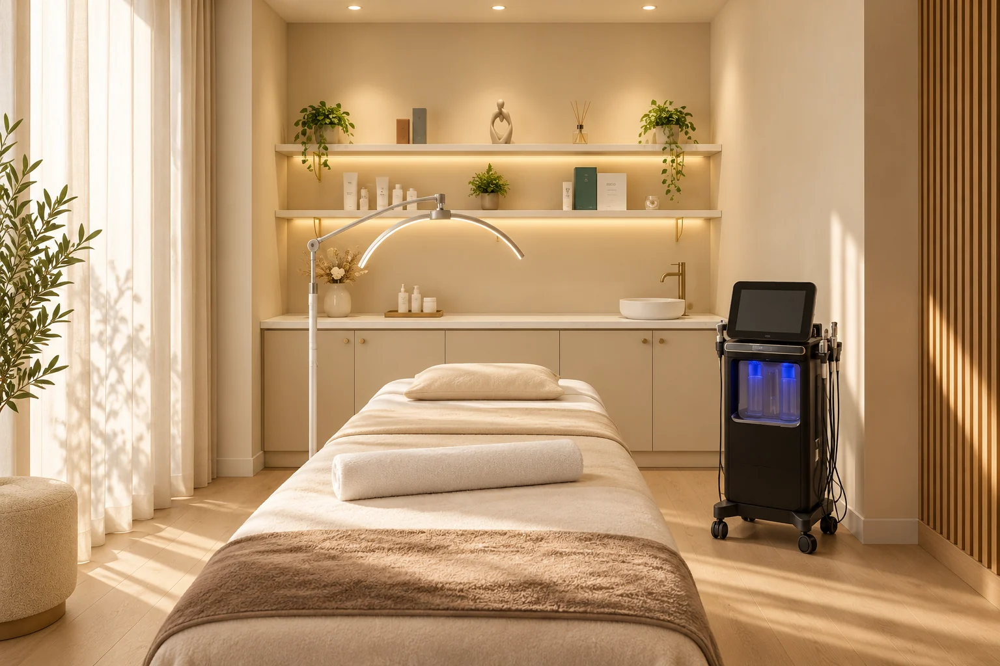

Diagnóstico
Diagnóstico facial VeraFace
Un análisis facial con VeraFace para observar parámetros como hidratación, poros, textura y manchas y orientar el cuidado posterior.

La belleza empieza por conocerte. Cuidado facial, tecnología y calma en una experiencia que pone el foco en ti.
Primero escuchamos. Después observamos. Y desde ahí comienza un camino de cuidado personal pensado para lo que buscas, con la serenidad de ir paso a paso.
De la valoración de tu piel a los cuidados faciales y corporales. Descubre cada experiencia antes de dar el siguiente paso.
Un análisis facial con VeraFace para observar parámetros como hidratación, poros, textura y manchas y orientar el cuidado posterior.
Una experiencia de cuidado facial con Astrodome, la tecnología de oxigenoterapia que aparece en el contenido del centro.
Un recorrido por el cuidado facial con OxygenCeuticals, la línea de cosmética coreana presentada por Shalom.
Una consulta para conversar sobre tu rutina y recibir orientación cosmética a partir de lo que necesita tu piel.
Un punto de partida abierto para el cuidado facial: el centro valora tu piel y plantea el protocolo adecuado para ti.
Una primera aproximación al cuidado corporal de Shalom, con valoración de necesidades y opciones del centro.
Una consulta previa para conocer las posibilidades de micropigmentación, resolver dudas y valorar el diseño con el centro.
Si todavía no sabes por dónde empezar, reserva una conversación inicial para conocer el universo de cuidado de Shalom.
Tarifas y protocolos finales según valoración y confirmación del centro. Primera visita y rutina personalizada se presentan como opciones de consulta. Imágenes editoriales creadas para esta propuesta.
VeraFace abre la conversación. Una valoración para observar tu piel y orientar los siguientes pasos de tu cuidado, con tiempo para resolver tus dudas.

Recreación artística inspirada en el espacio del centro.
Marfil, madera clara, luz suave. Un universo acogedor para poner el foco en ti. La tecnología acompaña; tu piel y tu experiencia marcan el punto de partida.
Escuchar lo que necesitas, resolver tus dudas y hacer espacio para que vivas tu experiencia con tranquilidad.
Una conversación para entender qué buscas. Cada experiencia comienza por escuchar.
Desde el cuidado que eliges hasta cómo organizas tu visita. Información clara y pasos sencillos.
Decide con calma. Consulta los servicios, resuelve tus dudas y elige tu próximo momento.
“Tu piel. Tu cuerpo. Tu momento.”
Elige una experiencia y explora nuestra agenda de demostración. No se realizan citas reales ni se contacta al centro desde la demo.
No. La agenda está en modo demostración: puedes elegir servicio, fecha y hora, guardar una solicitud y cancelarla. Se guarda en la agenda de prueba; no se envían mensajes al centro ni se confirma una cita real. Para una cita real, utiliza el WhatsApp del perfil.
La primera visita o el diagnóstico facial son puntos de partida para conversar sobre tu piel y conocer las opciones del centro. La adecuación de cualquier tratamiento debe decidirla el profesional.
Confirma las tarifas y el alcance del servicio directamente con el centro antes de tu visita. No se muestran precios sin verificar su vigencia.
El enlace de Google Maps abre la ficha facilitada para este centro. Comprueba dirección y horario antes de desplazarte.